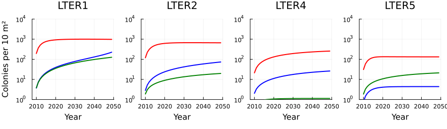

Corals of Mo’orea: an open community recovering by recruitment
Simon Frost
- Three genera after a disaster
- Size and the kernels
- Recruitment and its reading
- The genera as nets
- Recovery from an empty reef
- Elasticities
- The check against the authors’ R code
- After 2015
- The comparison with the authors’ code and the paper
- What is measured and what is assumed
- Where the model and its sources part
- Sources
- References
ENV["GKSwstype"] = "100"
using MatrixCommunityModels
using LinearAlgebra, Printf
using Plots
BLAS.set_num_threads(1)Three genera after a disaster
Between 2006 and 2010 an outbreak of the crown-of-thorns seastar, followed by Cyclone Oli, reduced the coral cover of the fore reefs of Mo’orea, French Polynesia, from more than 40% to less than 1%. Kayal et al. (2018) followed the recovery on four reefs of the Mo’orea Coral Reef Long Term Ecological Research site (LTER 1 and 2 on the north shore, LTER 4 on the east, LTER 5 on the west). They counted recruits, and tagged and remeasured colonies of the three genera that build most of the reef: Acropora, Pocillopora and Porites. From these data they built an integral projection model (IPM) for each genus on each reef. Colonies are structured by size, and recruits arrive from the plankton in numbers set by local crowding, so each population is open.
The genera interact only through recruitment. In Mo’orea, recruitment of Pocillopora falls as the coral assemblage grows, whatever its composition; that of Acropora rises with the abundance of Acropora; that of Porites barely changes (Kayal et al. 2015). Survival and growth depend on size alone. In this package each genus is a projection net, and the quantities recruitment reads are pools.
This vignette rebuilds the model from the paper’s Appendix S3 and Table S1. It checks the model against the authors’ own kernel functions, run in R, and against the simulations the paper publishes in its figures.
Size and the kernels
Size is $z = \log_{10}(S + 1)$, with $S$ the surface area of a colony’s living tissue in cm², on $[0, 7]$ in 100 cells (Appendix S3). From one year to the next a colony of size $z$ survives with probability $\mathrm{logit}^{-1}(s_0 + s_z z)$. If it survives, its new size is normal with mean $G_0 + G_z z$ and standard deviation $G_{SD}$. The parameters differ by genus and reef (Table S1):
taxa = (:acropora, :pocillopora, :porites)
reefs = (:lter1, :lter2, :lter4, :lter5)
label = Dict(:acropora => "Acropora", :pocillopora => "Pocillopora", :porites => "Porites")
println("reef genus s0 sz G0 Gz GSD R0 Rγ")
for r in reefs, t in taxa
p = CORAL_PARAMETERS[r][t]
@printf("%-6s %-12s %6.3f %6.3f %6.3f %6.3f %6.3f %6.3f %7.3f\n", r, label[t], p.survival.intercept,
p.survival.slope, p.growth.intercept, p.growth.slope, p.growth.sd, p.recruitment.intercept, p.recruitment.slope)
endreef genus s0 sz G0 Gz GSD R0 Rγ
lter1 Acropora 2.688 0.219 1.542 0.341 0.245 0.966 0.040
lter1 Pocillopora 2.400 0.308 1.023 0.748 0.153 2.688 -0.002
lter1 Porites 0.758 1.865 1.082 0.637 0.254 0.978 0.003
lter2 Acropora 1.085 0.821 1.168 0.555 0.157 0.852 0.040
lter2 Pocillopora 2.234 0.154 0.934 0.765 0.160 2.475 -0.002
lter2 Porites -0.171 1.240 0.644 0.808 0.300 0.673 0.003
lter4 Acropora -0.350 1.327 1.057 0.617 0.173 0.707 0.040
lter4 Pocillopora 0.850 0.699 1.093 0.733 0.163 1.724 -0.002
lter4 Porites -1.417 1.047 1.075 0.634 0.321 0.139 0.003
lter5 Acropora 2.455 -0.451 1.008 0.667 0.199 0.280 0.040
lter5 Pocillopora 2.651 -0.564 1.102 0.686 0.184 1.889 -0.002
lter5 Porites 0.685 0.759 0.689 0.798 0.273 0.669 0.003Recruitment and its reading
Each year $r$ recruits arrive, with sizes normal with mean 0.6 and standard deviation 0.2 (about 3 cm² of tissue, 2 cm across). The paper writes the number as
\[\log r = R_0 + R_\gamma\,\gamma ,\]
where the crowding $\gamma$ is the number of colonies of the genus itself for Acropora and Porites, and the summed sizes $z$ of the colonies of all three genera for Pocillopora (Appendix S3, equations iii to v). $R_0$ comes from the recruits counted in 2011-2012 and $R_\gamma$ from an earlier study. Recruitment is capped at 348 colonies per 10 m² a year, and a model step is a year on 10 m² of reef.
The units of this equation are not stated. The authors’ R script uses the natural logarithm, and its density and summed sizes are per 10 m², the area of a model iteration. This is the package’s default (reading = :as_written), since it is what the authors’ code does. Read that way, the model does not give the published simulations: Acropora and Porites end up with several times the share of the assemblage that the paper shows. A reading that does reproduce them is offered as reading = :calibrated, and the comparisons with the published figures below use it:
- the logarithm is to base 10;
\[R_0\]
is for the 25 m² plots in which recruits were counted, so that the recruits per 10 m² are $0.4 \times 10^{R_0 + R_\gamma \gamma}$;\[\gamma\]
is per m².
This reading was found by trying the natural and base-10 logarithm with recruits and crowding per m², per 10 m² and per 25 m², against the figures below. It is a reconstruction, not something the paper states. coral_recruits gives the number of recruits in either reading:
for t in taxa
@printf("%-12s at γ = 0: calibrated %6.1f, as written %5.1f recruits per 10 m² (LTER 1)\n", label[t],
coral_recruits(t, 0.0; reading = :calibrated), coral_recruits(t, 0.0))
endAcropora at γ = 0: calibrated 3.7, as written 2.6 recruits per 10 m² (LTER 1)
Pocillopora at γ = 0: calibrated 195.0, as written 14.7 recruits per 10 m² (LTER 1)
Porites at γ = 0: calibrated 3.8, as written 2.7 recruits per 10 m² (LTER 1)The genera as nets
coral builds one genus on one reef. It is written in this form (abridged from src/corals.jl):
colony = coral_stage() # z on [0, 7], 100 cells
life = kernel_net(colony, :growing => (y, x) -> survival(x) * growth(y, x))
net = inflow(life, (cell => ctx -> share[i] * recruits(ctx) for (i, cell) in enumerate(stage_names(colony)))...)
species(taxon, net; occupies = [:<taxon>_colonies => trait_weights(colony, z -> 1.0),
:<taxon>_log_size => trait_weights(colony, z -> z)],
reads = ...) # Pocillopora reads the other two log-size poolsThe recruits are inflows: they do not come from the colonies of the net, so the net has no births. share[i] is the probability that a recruit lands in cell i. The genus adds its colonies and their summed sizes to two pools. Acropora and Porites read their own colonies. Pocillopora reads the summed sizes of all three. coral_community composes the three genera:
c = coral_community(:lter1; reading = :calibrated)
(species = species_names(c), pools = pool_names(c), states = length(c))(species = [:acropora, :pocillopora, :porites], pools = [:acropora_colonies, :acropora_log_size, :pocillopora_colonies, :pocillopora_log_size, :porites_log_size, :porites_colonies], states = 300)Recovery from an empty reef
The paper’s first simulations start from empty reef and let it fill by recruitment alone. The first recruits arrive in the first step (2010), so 2013, “after 3 years of reef recovery”, is the fourth step and 2015 the sixth. (Four cohorts are visible in the published size distributions for 2013, and with four steps the elasticities to survival and growth match those published; see below.)
function recovery(reef; reading = :calibrated, steps = 6)
c = coral_community(reef; reading)
return c, project(c, zeros(length(c)), fill(nothing, steps))
end
z = meshpoints(coral_stage())
area = 10 .^ z .- 1
panels = map(reefs) do r
c, sol = recovery(r)
p = plot(; xscale = :log10, xlims = (0.1, 1e5), ylims = (0, 60), title = uppercase(String(r)), legend = r === :lter1 ? :topleft : false,
xlabel = r in (:lter4, :lter5) ? "Colony area (cm²)" : "", ylabel = r in (:lter1, :lter4) ? "Colonies per 10 m² per cell" : "")
stacked = zeros(length(z))
for (t, colour) in zip(taxa, (:blue, :red, :green))
lower = copy(stacked)
stacked .+= sol[t][5, :]
plot!(p, area[2:end], stacked[2:end]; fillrange = lower[2:end], color = colour, alpha = 0.7, lw = 0, label = label[t])
end
p
end
plot(panels...; layout = (2, 2), size = (800, 560))
These are the predicted assemblages of 2013, drawn as in Fig. 3a-d of the paper: colonies in each mesh cell, stacked by genus. Pocillopora dominates everywhere, as published. The cohorts are clearer here than in the paper, where the youngest cohorts are smaller (see “Where the model and its sources part”).
The paper prints the share of each genus in the summed sizes of the assemblage on each panel of Fig. 3 (2013) and Fig. S4 (2015). Fig. S2 gives the colonies per 10 m² of each genus in 2013, read here from the bar chart to the nearest few colonies.
shares(c, n) = (p = pool_totals(c, n, nothing); x = [getproperty(p, Symbol(t, :_log_size)) for t in taxa]; 100 .* x ./ sum(x))
colonies(c, n) = (p = pool_totals(c, n, nothing); [getproperty(p, Symbol(t, :_colonies)) for t in taxa])
fig3 = Dict(:lter1 => [3, 96, 2], :lter2 => [2, 97, 1], :lter4 => [6, 93, 1], :lter5 => [2, 95, 3])
figS4 = Dict(:lter1 => [4, 93, 3], :lter2 => [3, 96, 1], :lter4 => [6, 93, 0], :lter5 => [2, 94, 4])
figS2 = Dict(:lter1 => [24, 612, 14], :lter2 => [16, 428, 4], :lter4 => [8, 82, 4], :lter5 => [4, 128, 8])
fmt(v) = join([@sprintf("%3.0f", x) for x in v], " ")
println(" share 2013 (%) share 2015 (%) colonies 2013 (per 10 m²)")
println("reef here paper here paper here paper (Fig. S2)")
for r in reefs
c, sol = recovery(r)
@printf("%-6s %s %s %s %s %s %s\n", r, fmt(shares(c, sol.u[5, :])), fmt(fig3[r]),
fmt(shares(c, sol.u[7, :])), fmt(figS4[r]), join([@sprintf("%4.0f", x) for x in colonies(c, sol.u[5, :])], " "), fmt(figS2[r]))
end share 2013 (%) share 2015 (%) colonies 2013 (per 10 m²)
reef here paper here paper here paper (Fig. S2)
lter1 2 96 2 3 96 2 2 96 2 4 93 3 14 615 13 24 612 14
lter2 2 97 1 2 97 1 2 97 1 3 96 1 10 385 5 16 428 4
lter4 6 93 1 6 93 1 6 93 1 6 93 0 5 64 1 8 82 4
lter5 2 94 4 2 95 3 2 93 4 2 94 4 3 100 5 4 128 8Every share of 2013 is within a percentage point of the published one (allowing for the rounding of both), and every share of 2015 within three. The colonies of Pocillopora are within a quarter of Fig. S2. Read as written, the same model gives this:
println("reef share 2013 as written (%) colonies 2013 as written")
for r in reefs
c, sol = recovery(r; reading = :as_written)
@printf("%-6s %s %s\n", r, fmt(shares(c, sol.u[5, :])), join([@sprintf("%5.1f", x) for x in colonies(c, sol.u[5, :])], " "))
endreef share 2013 as written (%) colonies 2013 as written
lter1 16 72 12 11.6 50.1 9.5
lter2 16 77 7 9.0 39.8 5.0
lter4 21 74 5 5.9 16.8 1.8
lter5 14 71 15 4.8 21.2 5.8Pocillopora holds 19 to 24 percentage points less of the assemblage than published, and its colonies number in the tens, not the hundreds of Fig. S2.
Elasticities
Table S2 of the paper lists the elasticity of each population’s predicted change in summed size over 2010-2013 to each parameter. Its R script (section 4) computes the elasticity of the ratio of the summed size in the last year to that in the first, surf[[6]]/surf[[1]] for five years. Here the ratio is that of the fourth step to the first, and the derivatives are central differences. Shown for LTER 1:
function surface_ratio(reef, taxon, field, which, factor; reading = :calibrated)
P = CORAL_PARAMETERS
sizes = NamedTuple{taxa}(Tuple(t === taxon && field === :recruit_size ?
(which === :mean ? (0.6 * factor, 0.2) : (0.6, 0.2 * factor)) : (0.6, 0.2) for t in taxa))
pars = P
if field !== :recruit_size
p = P[reef][taxon]
rate = merge(getproperty(p, field), NamedTuple{(which,)}((getproperty(getproperty(p, field), which) * factor,)))
pars = merge(P, NamedTuple{(reef,)}((merge(P[reef], NamedTuple{(taxon,)}((merge(p, NamedTuple{(field,)}((rate,))),))),)))
end
c = coral_community(reef; parameters = pars, recruit_size = sizes, reading)
u = project(c, zeros(length(c)), fill(nothing, 4)).u
s(n) = getproperty(pool_totals(c, n, nothing), Symbol(taxon, :_log_size))
return s(u[end, :]) / s(u[2, :])
end
elasticity(args...; kw...) = abs((surface_ratio(args..., 1 + 1e-4; kw...) - surface_ratio(args..., 1 - 1e-4; kw...)) /
(2e-4 * surface_ratio(args..., 1.0; kw...)))
items = [(:survival, :intercept), (:survival, :slope), (:growth, :intercept), (:growth, :slope), (:growth, :sd),
(:recruitment, :intercept), (:recruitment, :slope), (:recruit_size, :mean), (:recruit_size, :sd)]
table_s2 = [0.24 0.31 0.11; 0.02 0.05 0.19; 0.82 0.78 0.82; 0.24 0.79 0.57; 0.00 0.00 0.00;
0.44 1.56 0.02; 0.29 0.28 0.01; 0.78 0.99 0.61; 0.02 0.01 0.02] # Table S2, LTER 1
println("parameter here (Acr Poc Por) Table S2 (Acr Poc Por)")
for (i, (f, w)) in enumerate(items)
e = [elasticity(:lter1, t, f, w) for t in taxa]
@printf("%-12s %-10s %5.2f %5.2f %5.2f %5.2f %5.2f %5.2f\n", f, w, e..., table_s2[i, :]...)
endparameter here (Acr Poc Por) Table S2 (Acr Poc Por)
survival intercept 0.25 0.28 0.11 0.24 0.31 0.11
survival slope 0.02 0.04 0.19 0.02 0.05 0.19
growth intercept 0.87 0.76 0.82 0.82 0.78 0.82
growth slope 0.26 0.68 0.57 0.24 0.79 0.57
growth sd 0.00 0.00 0.00 0.00 0.00 0.00
recruitment intercept 0.09 0.48 0.01 0.44 1.56 0.02
recruitment slope 0.04 0.08 0.00 0.29 0.28 0.01
recruit_size mean 0.83 0.78 0.61 0.78 0.99 0.61
recruit_size sd 0.01 0.01 0.02 0.02 0.01 0.02Survival, growth and the size of recruits match Table S2 closely, here and on the other three reefs (a check outside this vignette). The elasticities to the intercept and slope of recruitment do not: they are three to seven times smaller here, and smaller still for Pocillopora when read as written. None of the 54 combinations of logarithm and units tried (natural or base 10; $R_0$, and the crowding of each kind, per m², 10 m² or 25 m²) reproduces them (a check outside this vignette). The published model is more sensitive to recruitment than this one.
The check against the authors’ R code
The authors’ script (Kayal 2017) is a template. It fits its models to a data file it does not name, and its recruitment functions call objects that do not exist, so it does not run as it stands. test/reference/R/run_coral_reference.R reads the script at run time. It evaluates only its survival, growth, kernel and recruit-size functions, with the values of Table S1, and writes the recruitment of Appendix S3 in both readings. The kernels and 40 years of recovery on every reef, in both readings, agree with this package to rounding:
reference(file) = [split(l, ",") for l in readlines(joinpath(pkgdir(MatrixCommunityModels), "test", "reference", file))[2:end]]
codes = Dict("Acr" => :acropora, "Poc" => :pocillopora, "Por" => :porites)
reef_of = Dict("1" => :lter1, "2" => :lter2, "4" => :lter4, "5" => :lter5)
rows = reference("coral_runs.csv")
worst = 0.0
for reading in (:calibrated, :as_written), (code, r) in reef_of
c, sol = recovery(r; reading, steps = 40)
for row in rows
(row[1] == String(reading) && row[2] == code) || continue
p = pool_totals(c, sol.u[parse(Int, row[3]) + 1, :], nothing)
theirs = parse(Float64, row[5])
theirs > 0 && (global worst = max(worst, abs(getproperty(p, Symbol(codes[row[4]], :_colonies)) / theirs - 1)))
end
end
(largest_relative_difference_in_colonies = worst,)(largest_relative_difference_in_colonies = 7.327471962526033e-15,)After 2015
The paper projects to 2020 from the assemblages observed in 2015. Those data are not used here, so the projection below continues the recovery from empty reef, for 40 years (Acropora blue, Pocillopora red, Porites green). Recruitment of Acropora rises with its own density, with nothing to stop it but the cap.
plot(; layout = (1, 4), size = (900, 260), legend = false)
for (j, r) in enumerate(reefs)
c, sol = recovery(r; steps = 40)
p = reduce(vcat, permutedims(colonies(c, row)) for row in eachrow(sol.u))
for (k, colour) in enumerate((:blue, :red, :green))
plot!(2009 .+ (0:40), p[:, k]; subplot = j, color = colour, lw = 2, yscale = :log10, ylims = (1, 1e4),
title = uppercase(String(r)), xlabel = "Year", ylabel = j == 1 ? "Colonies per 10 m²" : "")
end
end
plot!()
for r in reefs
c, sol = recovery(r; steps = 40)
capped = findfirst(row -> coral_recruits(:acropora, pool_totals(c, row, nothing).acropora_colonies; reef = r, reading = :calibrated) >= CORAL_RECRUITMENT_CAP,
collect(eachrow(sol.u)))
@printf("%-6s Acropora recruitment reaches the cap of 348 in %s; colonies in 2049: %s\n", r,
capped === nothing ? "none of these years" : string(2009 + capped - 1), fmt(colonies(c, sol.u[end, :])))
endlter1 Acropora recruitment reaches the cap of 348 in none of these years; colonies in 2049: 225 977 126
lter2 Acropora recruitment reaches the cap of 348 in none of these years; colonies in 2049: 73 660 20
lter4 Acropora recruitment reaches the cap of 348 in none of these years; colonies in 2049: 26 256 1
lter5 Acropora recruitment reaches the cap of 348 in none of these years; colonies in 2049: 4 132 21Pocillopora levels off within a decade, held by its own density dependence. Acropora keeps increasing on the north shore (LTER 1 and
- and the east (LTER 4), fastest at LTER 1, but from an empty reef it
does not reach the cap within 40 years. Kayal et al. (2018) report that only Acropora on the north shore reached the cap, in their projections to 2020; those started from the larger Acropora populations observed in 2015 and with larger Acropora recruits (1.2 rather than 0.6), and cannot be repeated here. Without the cap the positive feedback of Acropora on its own recruitment has no limit; the cap is part of the model, not of the reef.
The comparison with the authors’ code and the paper
| Check | Agreement |
|---|---|
Survival-growth kernels against the authors’ P_z1z functions, 12 populations | absolute difference below 1e-12 |
| Recovery from empty reef, 40 years, four reefs, both readings, against the R reference | relative difference below 1e-14 |
| Share of each genus in the summed sizes in 2013 (Fig. 3a-d), 12 values | within 1 percentage point |
| Share of each genus in 2015 (Fig. S4a-d), 12 values | within 3 percentage points |
| Colonies of Pocillopora per 10 m² in 2013 (Fig. S2a, read from the figure) | within 22% |
| Colonies of Acropora and Porites in 2013 (Fig. S2a; published values 4 to 24) | within 10 colonies, mostly fewer |
| Elasticities to survival, growth and recruit size (Table S2, LTER 1) | within 0.05, except Pocillopora growth slope and recruit mean size (0.68 against 0.79; 0.78 against 0.99) |
| Elasticities to the intercept and slope of recruitment (Table S2) | no: three to seven times smaller |
| Shape of the size distributions in 2013 (Fig. 3a-d) | in part: the cohorts are where published, but the youngest are too large |
| The recruitment cap reached only by north-shore Acropora, by 2020 (Appendix S3) | not tested: those runs start from data not used here |
What is measured and what is assumed
| Quantity | Source |
|---|---|
| Survival and growth by size, by genus and reef | fitted to colonies tagged in 2011-2013 (Table S1) |
| Recruitment intercept $R_0$, by genus and reef | fitted to recruits counted in 2011-2012 (Table S1) |
| Recruitment slope $R_\gamma$, by genus | from Kayal et al. (2015), not read here (Table S1) |
| What recruitment responds to: own density, or summed sizes of the assemblage | Appendix S3 |
| Size of recruits, mean 0.6 and sd 0.2 | Appendix S3 (the paper’s initial runs; 1.2 and 0.4 for Acropora in its later runs, available as recruit_size) |
| Cap of 348 recruits per 10 m² a year | Appendix S3 |
| Mesh: $z$ on $[0, 7]$ in 100 cells | Appendix S3 |
| Base-10 logarithm, $R_0$ per 25 m², $\gamma$ per m² | calibrated here against Fig. 3, Fig. S2 and Fig. S4; not stated in the paper |
| Start: empty reef, first recruits in the first step | the paper’s initial runs; the step count chosen to match Fig. 3 and Table S2 |
Where the model and its sources part
- The units of the recruitment equation are a reconstruction. The package’s default follows the authors’ script; the calibrated reading used for the comparisons here reproduces the published shares of the assemblage (Fig. 3, Fig. S4) and, roughly, the densities (Fig. S2). It does not reproduce the shape of the published size distributions: in Fig. 3a the youngest cohorts of Pocillopora are about a fifth of the oldest, while here they are about as large. Nor does it reproduce the elasticities to recruitment of Table S2, which are three to seven times larger than here. Both point to a stronger density dependence of Pocillopora recruitment in the published model than in any reading tried. A reading with stronger density dependence (crowding per 10 m²) matches the cohort shapes better and the shares and densities worse. The paper’s own code, which would settle the question, is not published in runnable form.
- The authors’ R script, read as written, does not run (see above), and in its recruitment of Pocillopora it reads
m.parPoc["recr.Intercep"], a misspelt name that givesNAin R. The script uses the natural logarithm, which the published figures rule out. - The crowding of Pocillopora is the sum of the sizes $z$ (logarithms of area) of the colonies, as Appendix S3 writes it and Fig. S2b labels it (“sum log-sizes”), not their summed area.
- The paper’s updated runs start from the assemblages observed in 2013 and 2015 (MCR LTER data on the Environmental Data Initiative). Those data were not used, so Fig. 4, Fig. S5 to S8, Tables S3 and S4 and the projections to 2020 are not reproduced.
- Values read from the figures (Fig. S2) are approximate, to a few colonies.
Sources
Read in full: the paper (the authors’ accepted manuscript on eScholarship, which carries the DOI 10.1111/ele.13153) and its Supporting Information (Appendices S1 to S3, Figs. S1 to S11, Tables S1 to S4), and the authors’ R script (GitHub, commit af547a8, no licence). The publisher’s pages refused automated access, so the version of record itself was not read. Two DOIs carry this paper’s title and authors: 10.1111/ele.13153 (Ecology Letters 21(12), 1790-1799, online 11 September 2018) and 10.1111/ele.13203 (22(4), 605-615, online 3 February 2019). Crossref and PubMed list both, with the same abstract and no notice linking them. The eScholarship record, the MCR LTER bibliography and HAL give the first, which is cited here. Kayal et al. (2015), the source of the recruitment slopes, was not read. The parameters are the published values of Table S1, typed into data/corals/kayal2018_table_s1.csv; no file of the authors is included in this package.
References
Kayal, M., Lenihan, H. S., Brooks, A. J., Holbrook, S. J., Schmitt, R. J. & Kendall, B. E. (2018). Predicting coral community recovery using multi-species population dynamics models. Ecology Letters 21, 1790-1799. https://doi.org/10.1111/ele.13153
Kayal, M. (2017). R code for constructing a multi-species, open-population integral projection model of coral assemblage dynamics. GitHub repository MohsenKayal/Coral-assemblage-IPM. https://doi.org/10.5281/zenodo.573772
Kayal, M., Vercelloni, J., Wand, M. P. & Adjeroud, M. (2015). Searching for the best bet in life-strategy: a quantitative approach to individual performance and population dynamics in reef-building corals. Ecological Complexity 23, 73-84.
Lenihan, H. S. & Kayal, M. (2015). MCR LTER: Coral Reefs: Long-term coral population and community dynamics: annual island wide coral demography survey 2011 to present. Environmental Data Initiative. https://doi.org/10.6073/pasta/98855475790bfb012066f9dc802ecc31
Ellner, S. P., Childs, D. Z. & Rees, M. (2016). Data-driven Modelling of Structured Populations: A Practical Guide to the Integral Projection Model. Springer.